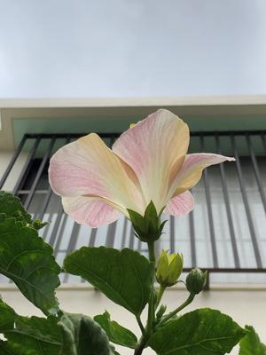
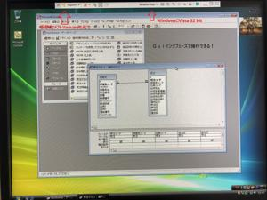

うるがいの話 ある日
最新: Microsoft Access【うるがいの話 ある日】とは 一日だけのプログです
『うるがいの話』の最新一日だけのプログで、通信料が少なく経済的だ。カニの画像をクリックすると全ての日付が載る『うるがいの話』サイトを表示します
|
|
【うるがいの話】 うるがい(ｳﾙｶﾞｲ urugai)とは、『もずくがに』の名前でとても大きくなります。 |
|---|---|
|
|
【カミマヤーの話】 猫のことを方言でマヤーといいます。カミマヤーとは、神の猫のことです。 |
|
【タナガーの話】 たながー（ﾀﾅｶﾞｰtanagaa）とは手長えびのことで、何種類かあり大きいのは車 エビぐらいになります。 |

|
【ぶながぁの話】 ぶながー(bunagaa)とは、赤い髪の毛、赤い身体、そして身長は１ｍ２０ｃｍ ぐらい、川の蟹を食べているの目撃された。場所は沖縄県国頭郡大宜味村のと ある村僕の隣近所に住んでいる爺さんから、聞いた話です。 |
|
|
【ギーマの話】 ギーマ(giima)とは、山原の里山に咲くスズランに似た、 花を付けます。実は食べられます、 気が付くと口の周りが紫になっています。 |
2021年12月04日 (土）Microsoft Access
16:00

かなりのデータを処理する必要が出てきた。エクセルソフトはあるが、データ
ベース向けのアクセス（Microsoft Access）があれば・・。ふと、家のどこ
かのパソコンに入っていたような記憶がある。うーん、そいえばマイクロソフ
トが保守しなくなったＯＳ、Ｖｉｓｔａが入っているディスクトップがあった
ただしこのパソコン、今年の３月２３日最後のお別れ以降、放置している。こ
のＯＳインストールＤＶＤが・・・、ＰＣ２号機に入れているサーバー仮想化
ソフトウェアＶＭｗａｒｅにインストールしてみるかと試してみた。お、あっ
さり出来た。そして、手元にあったアクセスが含まれているOffice2000もイン
ストールする、出来た！。懐かしい、仕事をするときのツールである。２０年
前のソフトであるが、十分である。ところで、同程度の機能がある無料ソフト
があるか調べたが無い。マイクロソフトのオフィス製品は凄いのである、ちな
みに購入するとしたら下の値段である、買わない！、SDGs（違うかな？）
プレインストール版 Office Professional 2019 が34,800 円
Microsoft Access 2019 単体 が14,938円

１５時４２分 ビットコインの総資産 ￥１５，８６６
おえ、かなり下がっている！